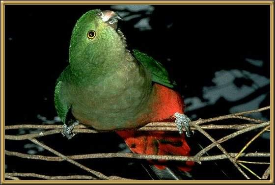

These birds live on the eastern seaboard, inhabiting forest and woodland areas. They are approx. 41-43cm (16-17 inches); This photograph is of a female parrot. The male has a magnificent red and blue coat and head.
Photographer: unknown